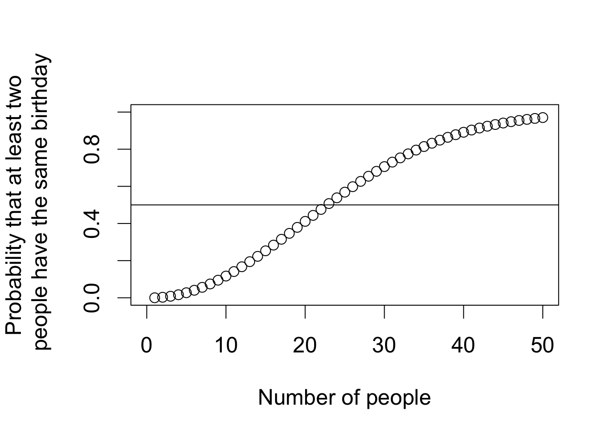
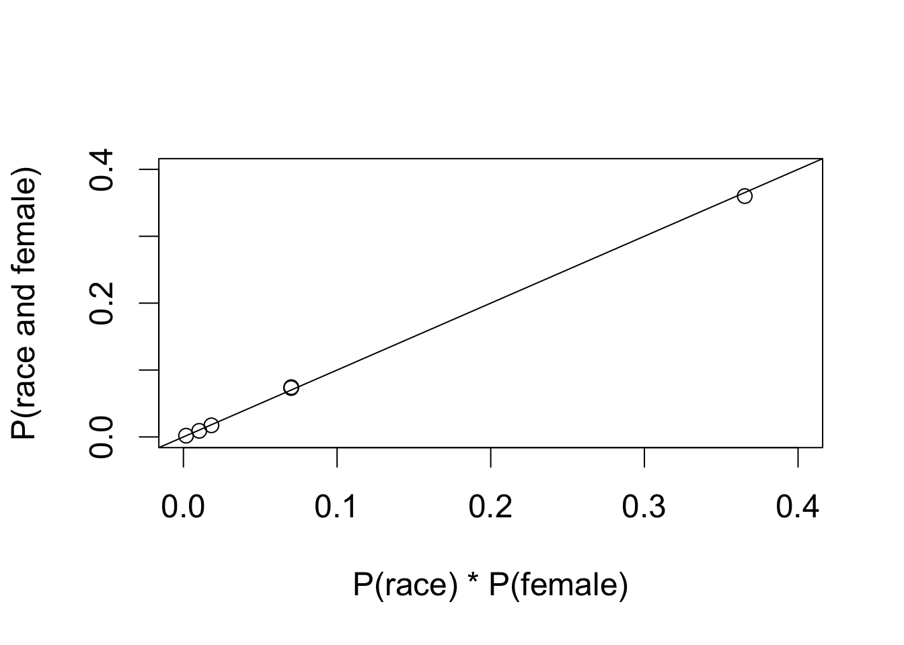
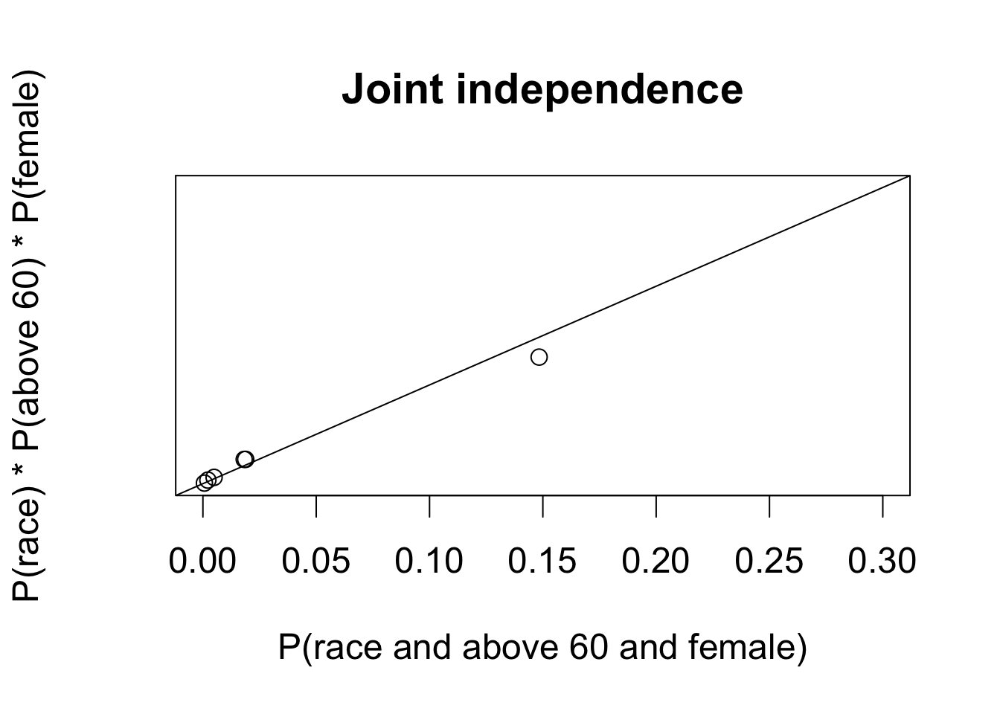
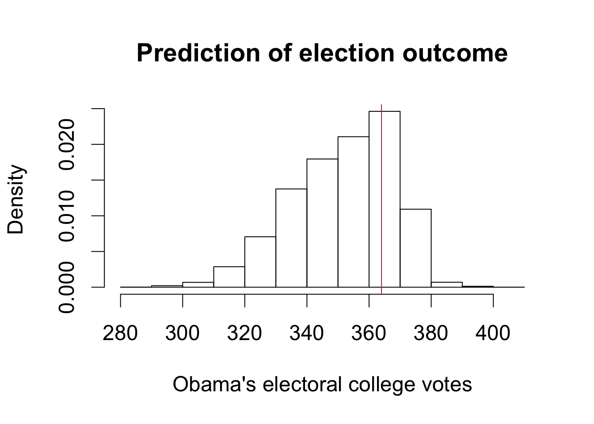
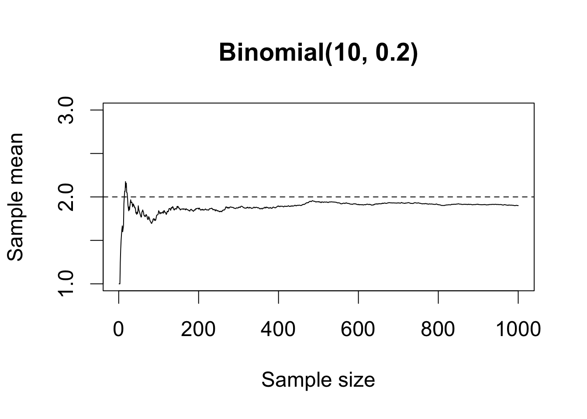
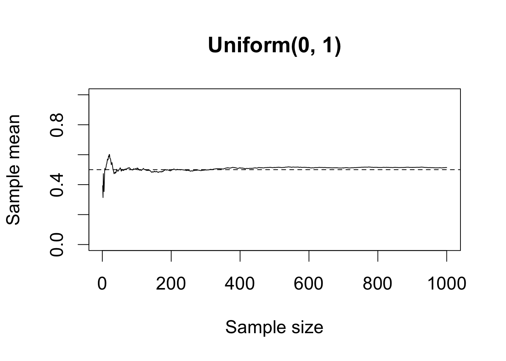
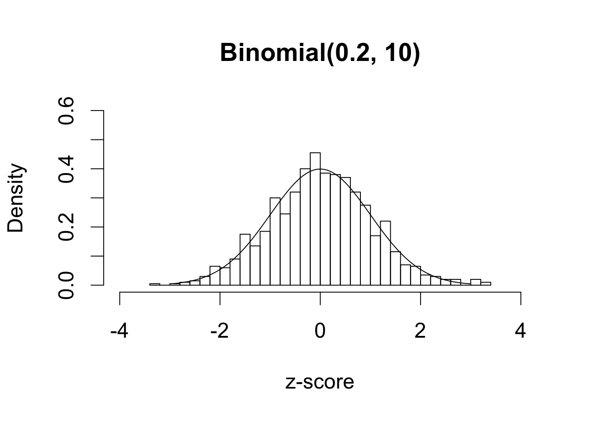
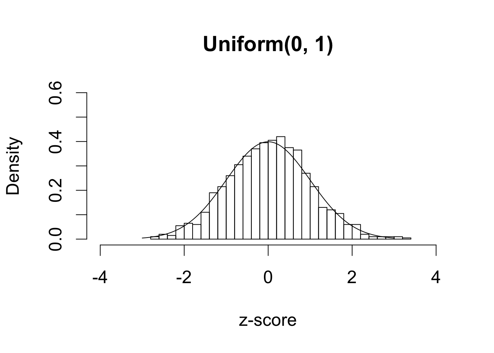

Probability
Chapter 6: Probability
Section 6.1: Probability
Section 6.1.3: Permutations
par(cex = 1.5, mar = c(5, 5, 4, 2))
birthday <- function(k) {
logdenom <- k * log(365) + lfactorial(365 - k) # log denominator
lognumer <- lfactorial(365) # log numerator
## P(at least two have the same bday) = 1 - P(nobody has the same bday)
pr <- 1 - exp(lognumer - logdenom) # transform back
return(pr)
}
k <- 1:50
bday <- birthday(k) # call the function
names(bday) <- k # add labels
plot(k, bday, xlab = "Number of people", xlim = c(0, 50), ylim = c(0, 1),
ylab = "Probability that at least two\n people have the same birthday")
abline(h = 0.5) # horizontal 0.5 line
bday[20:25]## 20 21 22 23 24 25
## 0.4114384 0.4436883 0.4756953 0.5072972 0.5383443 0.5686997Section 6.1.4: Sampling With and Without Replacement
k <- 23 # number of people
sims <- 1000 # number of simulations
event <- 0 # counter
for (i in 1:sims) {
days <- sample(1:365, k, replace = TRUE)
days.unique <- unique(days) # unique birthdays
## if there are duplicates, the number of unique birthdays
## will be less than the number of birthdays, which is `k'
if (length(days.unique) < k) {
event <- event + 1
}
}
## fraction of trials where at least two bdays are the same
answer <- event / sims
answer## [1] 0.513Section 6.2: Conditional Probability
Section 6.2.1: Conditional, Marginal, and Joint Probabilities
data("FLVoters", package = "qss")
dim(FLVoters) # before removal of missing data## [1] 10000 6FLVoters <- na.omit(FLVoters)
dim(FLVoters) # after removal## [1] 9113 6margin.race <- prop.table(table(FLVoters$race))
margin.race| asian | black | hispanic | native | other | white |
|---|---|---|---|---|---|
| 0.0192033 | 0.1310216 | 0.1308022 | 0.0031823 | 0.0340173 | 0.6817733 |
margin.gender <- prop.table(table(FLVoters$gender))
margin.gender| f | m |
|---|---|
| 0.5358279 | 0.4641721 |
prop.table(table(FLVoters$race[FLVoters$gender == "f"]))| asian | black | hispanic | native | other | white |
|---|---|---|---|---|---|
| 0.0169977 | 0.1388491 | 0.1363916 | 0.0034815 | 0.0323572 | 0.671923 |
joint.p <- prop.table(table(race = FLVoters$race, gender = FLVoters$gender))
joint.p| race/gender | f | m |
|---|---|---|
| asian | 0.0091079 | 0.0100955 |
| black | 0.0743992 | 0.0566224 |
| hispanic | 0.0730824 | 0.0577197 |
| native | 0.0018655 | 0.0013168 |
| other | 0.0173379 | 0.0166795 |
| white | 0.3600351 | 0.3217382 |
rowSums(joint.p)## asian black hispanic native other white
## 0.019203336 0.131021617 0.130802151 0.003182267 0.034017338 0.681773291colSums(joint.p)## f m
## 0.5358279 0.4641721FLVoters$age.group <- NA # initialize a variable
FLVoters$age.group[FLVoters$age <= 20] <- 1
FLVoters$age.group[FLVoters$age > 20 & FLVoters$age <= 40] <- 2
FLVoters$age.group[FLVoters$age > 40 & FLVoters$age <= 60] <- 3
FLVoters$age.group[FLVoters$age > 60] <- 4
joint3 <-
prop.table(table(race = FLVoters$race, age.group = FLVoters$age.group,
gender = FLVoters$gender))
joint3| race | age.group | gender | Freq |
|---|---|---|---|
| asian | 1 | f | 0.0001097 |
| m | 0.0002195 | ||
| 2 | f | 0.0026336 | |
| m | 0.0028531 | ||
| 3 | f | 0.0041699 | |
| m | 0.0051575 | ||
| 4 | f | 0.0021947 | |
| m | 0.0018655 | ||
| black | 1 | f | 0.0016460 |
| m | 0.0016460 | ||
| 2 | f | 0.0280917 | |
| m | 0.0228245 | ||
| 3 | f | 0.0257873 | |
| m | 0.0189839 | ||
| 4 | f | 0.0188741 | |
| m | 0.0131680 | ||
| hispanic | 1 | f | 0.0015363 |
| m | 0.0016460 | ||
| 2 | f | 0.0260068 | |
| m | 0.0197520 | ||
| 3 | f | 0.0273236 | |
| m | 0.0221661 | ||
| 4 | f | 0.0182157 | |
| m | 0.0141556 | ||
| native | 1 | f | 0.0001097 |
| m | 0.0000000 | ||
| 2 | f | 0.0004389 | |
| m | 0.0004389 | ||
| 3 | f | 0.0006584 | |
| m | 0.0003292 | ||
| 4 | f | 0.0006584 | |
| m | 0.0005487 | ||
| other | 1 | f | 0.0003292 |
| m | 0.0004389 | ||
| 2 | f | 0.0062548 | |
| m | 0.0069132 | ||
| 3 | f | 0.0058159 | |
| m | 0.0055964 | ||
| 4 | f | 0.0049380 | |
| m | 0.0037309 | ||
| white | 1 | f | 0.0059256 |
| m | 0.0040601 | ||
| 2 | f | 0.0796664 | |
| m | 0.0750576 | ||
| 3 | f | 0.1260836 | |
| m | 0.1184023 | ||
| 4 | f | 0.1483595 | |
| m | 0.1242181 |
## marginal probabilities for age groups
margin.age <- prop.table(table(FLVoters$age.group))
margin.age| 1 | 2 | 3 | 4 |
|---|---|---|---|
| 0.0176671 | 0.2709316 | 0.360474 | 0.3509272 |
## P(black and female | above 60)
joint3["black", 4, "f"] / margin.age[4]## 4
## 0.05378361## two-way joint probability table for age group and gender
joint2 <- prop.table(table(age.group = FLVoters$age.group,
gender = FLVoters$gender))
joint2| age.group/gender | f | m |
|---|---|---|
| 1 | 0.0096565 | 0.0080105 |
| 2 | 0.1430923 | 0.1278394 |
| 3 | 0.1898387 | 0.1706354 |
| 4 | 0.1932404 | 0.1576868 |
joint2[4, "f"] # P(above 60 and female)## [1] 0.1932404## P(black | female and above 60)
joint3["black", 4, "f"] / joint2[4, "f"]## [1] 0.09767178Section 6.2.2: Independence
par(cex = 1.5)
plot(c(margin.race * margin.gender["f"]), # product of marginal probs.
c(joint.p[, "f"]), # joint probabilities
xlim = c(0, 0.4), ylim = c(0, 0.4),
xlab = "P(race) * P(female)", ylab = "P(race and female)")
abline(0, 1) # 45 degree line
par(cex = 1.5)
## joint independence
plot(c(joint3[, 4, "f"]), # joint probability
margin.race * margin.age[4] * margin.gender["f"], # product of marginals
xlim = c(0, 0.3), ylim = c(0, 0.3), main = "Joint independence",
xlab = "P(race and above 60 and female)",
ylab = "P(race) * P(above 60) * P(female)")
abline(0, 1)
## conditional independence given female
plot(c(joint3[, 4, "f"]) / margin.gender["f"], # joint prob. given female
## product of marginals
(joint.p[, "f"] / margin.gender["f"]) *
(joint2[4, "f"] / margin.gender["f"]),
xlim = c(0, 0.3), ylim = c(0, 0.3), main = "Marginal independence",
xlab = "P(race and above 60 | female)",
ylab = "P(race | female) * P(above 60 | female)")
abline(0, 1)
sims <- 1000
doors <- c("goat", "goat", "car")
result.switch <- result.noswitch <- rep(NA, sims)
for (i in 1:sims) {
## randomly choose the initial door
first <- sample(1:3, size = 1)
result.noswitch[i] <- doors[first]
remain <- doors[-first] # remaining two doors
## Monty chooses one door with a goat
monty <- sample((1:2)[remain == "goat"], size = 1)
result.switch[i] <- remain[-monty]
}
mean(result.noswitch == "car")## [1] 0.349mean(result.switch == "car")## [1] 0.651Section 6.2.4: Predicting Race Using Surname and Residence Location
data("cnames", package = "qss")
dim(cnames)## [1] 151671 7x <- c("blue", "red", "yellow")
y <- c("orange", "blue")
## match x with y
match(x, y) # `blue' appears in the 2nd element of y## [1] 2 NA NA## match y with x
match(y, x) # `blue' appears in the 1st element of x## [1] NA 1FLVoters <- FLVoters[!is.na(match(FLVoters$surname, cnames$surname)), ]
dim(FLVoters)## [1] 8022 7whites <- subset(FLVoters, subset = (race == "white"))
w.indx <- match(whites$surname, cnames$surname)
head(w.indx)## [1] 8610 237 4131 2244 27852 3495## relevant variables
vars <- c("pctwhite", "pctblack", "pctapi", "pcthispanic", "pctothers")
mean(apply(cnames[w.indx, vars], 1, max) == cnames$pctwhite[w.indx])## [1] 0.950218## blacks
blacks <- subset(FLVoters, subset = (race == "black"))
b.indx <- match(blacks$surname, cnames$surname)
mean(apply(cnames[b.indx, vars], 1, max) == cnames$pctblack[b.indx])## [1] 0.1604824## Hispanics
hispanics <- subset(FLVoters, subset = (race == "hispanic"))
h.indx <- match(hispanics$surname, cnames$surname)
mean(apply(cnames[h.indx, vars], 1, max) == cnames$pcthispanic[h.indx])## [1] 0.8465298## Asians
asians <- subset(FLVoters, subset = (race == "asian"))
a.indx <- match(asians$surname, cnames$surname)
mean(apply(cnames[a.indx, vars], 1, max) == cnames$pctapi[a.indx])## [1] 0.5642857indx <- match(FLVoters$surname, cnames$surname)
## whites false discovery rate
1 - mean(FLVoters$race[apply(cnames[indx, vars], 1, max) ==
cnames$pctwhite[indx]] == "white")## [1] 0.1973603## black false discovery rate
1 - mean(FLVoters$race[apply(cnames[indx, vars], 1, max) ==
cnames$pctblack[indx]] == "black")## [1] 0.3294574## Hispanic false discovery rate
1 - mean(FLVoters$race[apply(cnames[indx, vars], 1, max) ==
cnames$pcthispanic[indx]] == "hispanic")## [1] 0.2274755## Asian false discovery rate
1 - mean(FLVoters$race[apply(cnames[indx, vars], 1, max) ==
cnames$pctapi[indx]] == "asian")## [1] 0.3416667data("FLCensus", package = "qss")
## compute proportions by applying weighted.mean() to each column
race.prop <-
apply(FLCensus[, c("white", "black", "api", "hispanic", "others")],
2, weighted.mean, weights = FLCensus$total.pop)
race.prop # race proportions in Florida## white black api hispanic others
## 0.60451586 0.13941679 0.02186662 0.21279972 0.02140101total.count <- sum(cnames$count)
## P(surname | race) = P(race | surname) * P(surname) / P(race)
cnames$name.white <- (cnames$pctwhite / 100) *
(cnames$count / total.count) / race.prop["white"]
cnames$name.black <- (cnames$pctblack / 100) *
(cnames$count / total.count) / race.prop["black"]
cnames$name.hispanic <- (cnames$pcthispanic / 100) *
(cnames$count / total.count) / race.prop["hispanic"]
cnames$name.asian <- (cnames$pctapi / 100) *
(cnames$count / total.count) / race.prop["api"]
cnames$name.others <- (cnames$pctothers / 100) *
(cnames$count / total.count) / race.prop["others"]
FLVoters <- merge(x = FLVoters, y = FLCensus, by = c("county", "VTD"),
all = FALSE)
## P(surname | residence) = sum_race P(surname | race) P(race | residence)
indx <- match(FLVoters$surname, cnames$surname)
FLVoters$name.residence <- cnames$name.white[indx] * FLVoters$white +
cnames$name.black[indx] * FLVoters$black +
cnames$name.hispanic[indx] * FLVoters$hispanic +
cnames$name.asian[indx] * FLVoters$api +
cnames$name.others[indx] * FLVoters$others
## P(race | surname, residence) = P(surname | race) * P(race | residence)
## / P(surname | residence)
FLVoters$pre.white <- cnames$name.white[indx] * FLVoters$white /
FLVoters$name.residence
FLVoters$pre.black <- cnames$name.black[indx] * FLVoters$black /
FLVoters$name.residence
FLVoters$pre.hispanic <- cnames$name.hispanic[indx] * FLVoters$hispanic /
FLVoters$name.residence
FLVoters$pre.asian <- cnames$name.asian[indx] * FLVoters$api /
FLVoters$name.residence
FLVoters$pre.others <- 1 - FLVoters$pre.white - FLVoters$pre.black -
FLVoters$pre.hispanic - FLVoters$pre.asian
## relevant variables
vars1 <- c("pre.white", "pre.black", "pre.hispanic", "pre.asian",
"pre.others")
## whites
whites <- subset(FLVoters, subset = (race == "white"))
mean(apply(whites[, vars1], 1, max) == whites$pre.white)## [1] 0.9371366## blacks
blacks <- subset(FLVoters, subset = (race == "black"))
mean(apply(blacks[, vars1], 1, max) == blacks$pre.black)## [1] 0.6474954## Hispanics
hispanics <- subset(FLVoters, subset = (race == "hispanic"))
mean(apply(hispanics[, vars1], 1, max) == hispanics$pre.hispanic)## [1] 0.85826## Asians
asians <- subset(FLVoters, subset = (race == "asian"))
mean(apply(asians[, vars1], 1, max) == asians$pre.asian)## [1] 0.6071429## proportion of blacks among those with surname "White"
cnames$pctblack[cnames$surname == "WHITE"]## [1] 27.38## predicted probability of being black given residence location
summary(FLVoters$pre.black[FLVoters$surname == "WHITE"])| Min. | 1st Qu. | Median | Mean | 3rd Qu. | Max. |
|---|---|---|---|---|---|
| 0.005207 | 0.08115 | 0.1763 | 0.264 | 0.32 | 0.9837 |
## whites
1 - mean(FLVoters$race[apply(FLVoters[, vars1], 1, max) ==
FLVoters$pre.white] == "white")## [1] 0.1187425## blacks
1 - mean(FLVoters$race[apply(FLVoters[, vars1], 1, max) ==
FLVoters$pre.black] == "black")## [1] 0.2346491## Hispanics
1 - mean(FLVoters$race[apply(FLVoters[, vars1], 1, max) ==
FLVoters$pre.hispanic] == "hispanic")## [1] 0.2153709## Asians
1 - mean(FLVoters$race[apply(FLVoters[, vars1], 1, max) ==
FLVoters$pre.asian] == "asian")## [1] 0.3461538Section 6.3: Random Variables and Probability Distributions
Section 6.3.2: Bernoulli and Uniform Distributions
## uniform PDF: x = 0.5, interval = [0, 1]
dunif(0.5, min = 0, max = 1)## [1] 1## uniform CDF: x = 1, interval = [-2, 2]
punif(1, min = -2, max = 2)## [1] 0.75sims <- 1000
p <- 0.5 # success probabilities
x <- runif(sims, min = 0, max = 1) # uniform [0, 1]
head(x)## [1] 0.4248609 0.2555075 0.3536411 0.3963036 0.8440048 0.2878646y <- as.integer(x <= p) # Bernoulli; turn TRUE/FALSE to 1/0
head(y)## [1] 1 1 1 1 0 1mean(y) # close to success probability p, proportion of 1's vs. 0's## [1] 0.484Section 6.3.3: Binomial Distribution
## PMF when x = 2, n = 3, p = 0.5
dbinom(2, size = 3, prob = 0.5)## [1] 0.375## CDF when x = 1, n = 3, p = 0.5
pbinom(1, size = 3, prob = 0.5)## [1] 0.5## number of voters who turn out
voters <- c(1000, 10000, 100000)
dbinom(voters / 2, size = voters, prob = 0.5)## [1] 0.025225018 0.007978646 0.002523126Section 6.3.4: Normal Distribution
## plus minus one standard deviation from the mean
pnorm(1) - pnorm(-1)
## plus minus two standard deviations from the mean
pnorm(2) - pnorm(-2)
mu <- 5
sigma <- 2
## plus minus one standard deviation from the mean
pnorm(mu + sigma, mean = 5, sd = 2) - pnorm(mu - sigma, mean = 5, sd = 2)
## plus minus two standard deviations from the mean
pnorm(mu + 2*sigma, mean = 5, sd = 2) - pnorm(mu - 2*sigma, mean = 5, sd = 2)
## see the page reference above
## `Obama2012.z' is Obama's 2012 standardized vote share
## `Obama2008.z' is Obama's 2008 standardized vote share
fit1
par(cex = 1.5)
e <- resid(fit1)
## z-score of residuals
e.zscore <- scale(e)
## alternatively we can divide residuals by their standard deviation
e.zscore <- e / sd(e)
hist(e.zscore, freq = FALSE, ylim = c(0, 0.4),
xlab = "Standardized residuals",
main = "Distribution of standardized residuals")
x <- seq(from = -3, to = 3, by = 0.01)
lines(x, dnorm(x)) # overlay the Normal density
qqnorm(e.zscore, xlim = c(-3, 3), ylim = c(-3, 3)) # quantile-quantile plot
abline(0, 1) # 45 degree line
e.sd <- sd(e)
e.sd
CA.2008 <- pres$Obama2008.z[pres$state == "CA"]
CA.2008
CA.mean2012 <- coef(fit1) * CA.2008
CA.mean2012
## area to the right; greater than CA.2008
pnorm(CA.2008, mean = CA.mean2012, sd = e.sd, lower.tail = FALSE)
TX.2008 <- pres$Obama2008.z[pres$state == "TX"]
TX.mean2012 <- coef(fit1) * TX.2008
TX.mean2012
pnorm(TX.2008, mean = TX.mean2012, sd = e.sd, lower.tail = FALSE)Section 6.3.5: Expectation and Variance
## theoretical variance: p was set to 0.5 earlier
p * (1-p)## [1] 0.25## sample variance using `y' generated earlier
var(y)## [1] 0.249994Section 6.3.6: Predicting Election Outcomes with Uncertainty
data("pres08", package = "qss")
## two-party vote share
pres08$p <- pres08$Obama / (pres08$Obama + pres08$McCain)
par(cex = 1.5)
n.states <- nrow(pres08) # number of states
n <- 1000 # number of respondents
sims <- 10000 # number of simulations
## Obama's electoral votes
Obama.ev <- rep(NA, sims)
for (i in 1:sims) {
## samples number of votes for Obama in each state
draws <- rbinom(n.states, size = n, prob = pres08$p)
## sums state's electoral college votes if Obama wins the majority
Obama.ev[i] <- sum(pres08$EV[draws > n / 2])
}
hist(Obama.ev, freq = FALSE, main = "Prediction of election outcome",
xlab = "Obama's electoral college votes")
abline(v = 364, col = "red") # actual result
summary(Obama.ev)| Min. | 1st Qu. | Median | Mean | 3rd Qu. | Max. |
|---|---|---|---|---|---|
| 289 | 340 | 353 | 352.1 | 364 | 398 |
mean(Obama.ev)## [1] 352.142## probability of binomial random variable taking greater than n/2 votes
sum(pres08$EV * pbinom(n / 2, size = n, prob = pres08$p, lower.tail = FALSE))## [1] 352.1388## approximate variance using Monte Carlo draws
var(Obama.ev)## [1] 262.9825## theoretical variance
pres08$pb <- pbinom(n / 2, size = n, prob = pres08$p, lower.tail = FALSE)
V <- sum(pres08$pb * (1 - pres08$pb) * pres08$EV^2)
V## [1] 268.8008## approximate standard deviation using Monte Carlo draws
sd(Obama.ev)## [1] 16.21674## theoretical standard deviation
sqrt(V)## [1] 16.39515Section 6.4: Large Sample Theorems
Section 6.4.1: The Law of Large Numbers
sims <- 1000
## 3 separate simulations for each
x.binom <- rbinom(sims, p = 0.2, size = 10)
## computing sample mean with varying sample size
mean.binom <- cumsum(x.binom) / 1:sims
## default runif() is uniform(0, 1)
x.unif <- runif(sims)
mean.unif <- cumsum(x.unif) / 1:sims
par(cex = 1.5)
## plot for binomial
plot(1:sims, mean.binom, type = "l", ylim = c(1, 3),
xlab = "Sample size", ylab = "Sample mean", main = "Binomial(10, 0.2)")
abline(h = 2, lty = "dashed") # expectation
## plot for uniform
plot(1:sims, mean.unif, type = "l", ylim = c(0, 1),
xlab = "Sample size", ylab = "Sample mean", main = "Uniform(0, 1)")
abline(h = 0.5, lty = "dashed") # expectation
Section 6.4.2: The Central Limit Theorem
par(cex = 1.5)
## sims = number of simulations
n.samp <- 1000
z.binom <- z.unif <- rep(NA, sims)
for (i in 1:sims) {
x <- rbinom(n.samp, p = 0.2, size = 10)
z.binom[i] <- (mean(x) - 2) / sqrt(1.6 / n.samp)
x <- runif(n.samp, min = 0, max = 1)
z.unif[i] <- (mean(x) - 0.5) / sqrt(1 / (12 * n.samp))
}
## histograms; nclass specifies the number of bins
hist(z.binom, freq = FALSE, nclass = 40, xlim = c(-4, 4), ylim = c(0, 0.6),
xlab = "z-score", main = "Binomial(0.2, 10)")
x <- seq(from = -3, to = 3, by = 0.01)
lines(x, dnorm(x)) # overlay the standard Normal PDF
hist(z.unif, freq = FALSE, nclass = 40, xlim = c(-4, 4), ylim = c(0, 0.6),
xlab = "z-score", main = "Uniform(0, 1)")
lines(x, dnorm(x))